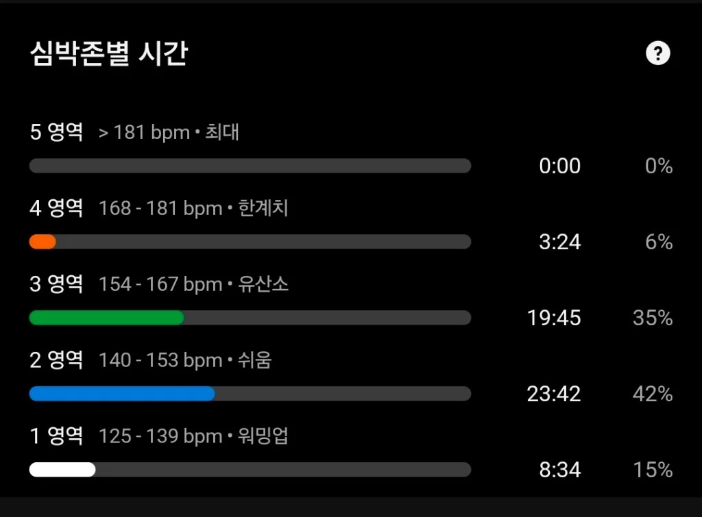
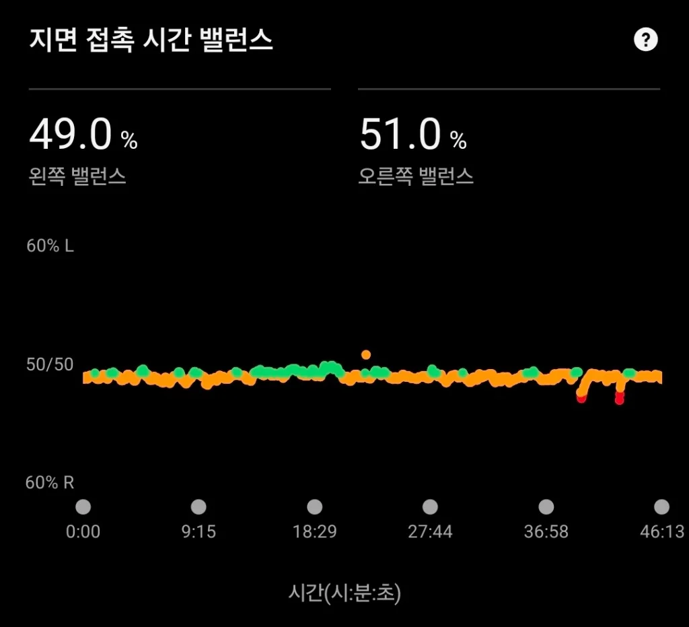

앞발 착지 억지로 따라 하다간 다칩니다:
내 몸에 맞는 진짜 발 착지법의 진실 (포어풋 vs 힐스트라이크)
- 정답 착지법은 없습니다: 실제 마라톤 완주자의 94%는 뒤꿈치(힐스트라이크)로 착지합니다.
- 무리한 앞발(포어풋) 착지는 종아리 파열, 아킬레스건염, 족저근막염의 주원인입니다.
- 착지 위치보다 100배 중요한 것은 '발이 내 몸의 중심(골반) 바로 아래에 떨어지는가'입니다.
1. "포어풋으로 뛰어야 고수?" 유튜브가 만든 가장 위험한 착각
러닝을 시작하고 유튜브나 인스타그램을 보다 보면 흔히 마주치는 말이 있습니다. "뒤꿈치로 착지하면 무릎이 다 망가집니다. 엘리트 선수들처럼 발 앞부분(포어풋)으로 착지해야 무릎 충격이 사라집니다."
이 말을 듣고 곧바로 다음 날 러닝에서 발뒤꿈치를 바닥에 닿지 않으려고 까치발처럼 껑충껑충 뛰다가, 불과 2~3일 만에 발목 안쪽, 아킬레스건, 종아리 알이 터질 듯한 극심한 통증으로 달리기를 접는 초보 러너들이 수없이 많습니다.
과연 정말로 앞발(포어풋) 착지만이 인류의 유일한 정답일까요? 세계적인 과학 연구 결과는 전혀 다른 사실을 말해줍니다.
2. 하버드대 연구와 2,000명 마라토너의 충격적인 진실
진화인류학과 스포츠 과학계가 밝혀낸 실증 연구들을 살펴보면 매우 흥미로운 사실들이 드러납니다:
하버드대 연구진이 신발을 전혀 신지 않고 평생 맨발로 살아온 케냐의 다산나크(Daasanach) 부족민들을 트랙에서 달리게 했을 때, 맨발임에도 불구하고 무려 72%가 뒤꿈치로 편안하게 착지했습니다.
또한 미국 밀워키 호반 마라톤에서 실제 2,000명이 넘는 완주자들을 초고속 카메라로 분석한 결과, 서브-3(풀코스 2시간대) 상위권 러너들을 포함한 94%가 뒤꿈치로 착지하고 있었습니다. 즉, '뒤꿈치 착지는 틀렸고 앞발 착지만이 옳다'는 주장은 완전히 근거 없는 편견이었던 것입니다.
3. 착지법을 억지로 바꾸면 부상이 생기는 해부학적 이유
달릴 때 지면에 부딪히는 충격 에너지는 사라지지 않고 몸의 다른 부위로 이동할 뿐입니다.
- 뒤꿈치 착지(힐스트라이크): 충격이 무릎과 골반 쪽으로 분산됩니다.
- 앞발 착지(포어풋): 무릎 충격은 줄어들지만, 그 충격이 고스란히 종아리 근육, 아킬레스건, 발바닥 인대(족저근막)로 집중 폭격됩니다.
오랜 세월 러닝을 해온 엘리트 선수가 아니라면, 일반인의 종아리 건과 아킬레스건은 체중의 3~4배에 달하는 앞발 착지 충격을 버텨낼 준비가 되어 있지 않습니다. 자세를 인위적으로 교정하려다가 오히려 부상을 자초하게 되는 이유가 바로 여기에 있습니다.
4. 진짜 중요한 단 하나의 비밀: '발의 위치(오버스트라이딩 방지)'
그렇다면 부상 없이 오래 달리려면 발을 어떻게 디뎌야 할까요? 스포츠 생체역학자들의 결론은 아주 명쾌합니다:
뒤꿈치든 앞발이든 상관없습니다. 발이 내 골반(무게중심) 바로 아래에 수직으로 떨어지면 부상은 일어나지 않습니다.
가장 위험한 것은 보폭을 크게 벌려 발이 내 몸보다 한참 앞으로 뻗어 나가며 착지하는 '오버스트라이딩(Overstriding)'입니다. 발이 몸 앞쪽에 닿으면 마치 달리는 자전거의 앞 브레이크를 잡는 것처럼 제동 충격이 무릎 관절로 고스란히 전달됩니다.
아래 데이터는 필자가 실제 야외 로드러닝에서 측정한 가민 커넥트 지면 접촉 시간(GCT) 및 좌우 밸런스 실측 그래프입니다. 인위적으로 앞발(포어풋) 착지를 흉내 내지 않고 무게중심 바로 아래로 편안하게 떨어뜨렸을 때, 발이 바닥에 머무는 시간은 평균 245ms로 매우 짧고 경쾌하게 튕겨 올라옵니다. 또한 지면 접촉 시간 밸런스는 왼쪽 49.0% : 오른쪽 51.0%로 거의 완벽한 50:50 대칭을 유지하고 있습니다. 억지로 발 모양을 바꾸려 하지 말고, 오버스트라이드를 줄여 양발이 고르게 충격을 나누어 받는 것이 부상 없이 꾸준히 달릴 수 있었던 진짜 비결입니다.


5. 오늘 바로 실천하는 부상 방지 3단계 원칙
- 보폭을 줄이고 발걸음을 경쾌하게 (케이던스 올리기): 1분에 170~180보 수준으로 발을 가볍게 구르면 발이 자연스럽게 몸 밑에 착지합니다.
- 내 발이 편안한 자연스러운 착지 유지: 뒤꿈치가 먼저 닿든 발바닥 전체가 닿든 내 몸이 편안한 자세를 억지로 바꾸지 마세요.
- 숨차지 않은 편안한 조깅 속도 지키기: 너무 빠른 속도로 무리하게 달릴 때 자세가 무너집니다. 전체 달리기의 80%는 대화 가능한 속도로 달려야 기초 관절망이 튼튼해집니다.
내 관절에 무리 없는 '진짜 조깅 속도'를 알고 계신가요?
달릴 때 발 착지가 불안정해지는 가장 큰 원인은 '내 실력보다 너무 빠르게 달리기 때문'입니다. RunAnalyz 1초 계산기에 내 최근 달리기 기록을 넣고, 오늘 뛰어도 관절이 안전한 맞춤 조깅 속도를 처방받아 보세요.
⚡ 내 맞춤 달리기 속도 처방받기 ›- Lieberman, D. E., et al. (2010). "Foot strike patterns and collision forces in habitually barefoot versus shod runners." Nature, 463(7280), 531-535. (하버드대 연구팀의 케냐 칼렌진족 맨발 착지 연구)
- Hatala, K. G., et al. (2013). "Variation in Foot Strike Patterns during Running among Habitually Barefoot Populations." PLoS ONE, 8(1), e52548. (케냐 북부 다산나크 유목민의 72% 뒤꿈치 착지 실측 연구)
- Larson, P., et al. (2011). "Foot strike patterns of runners at the 10-km and 32-km marks of a recreational marathon." International Journal of Sports Physiology and Performance, 6(4), 554-566. (밀워키 마라톤 2,000명 참가자 초고속 카메라 분석 데이터)
- Reynolds, G. (2013). "Is There One Right Way to Run?" The New York Times (Well Blog).
- 마라톤 정보센터 아카이브 (Marathon Online). "초보자교실: 올바른 달리기 자세는 한 가지 뿐인가?" 기고 자료 재해석.